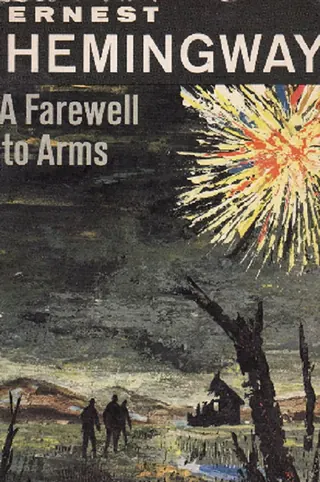
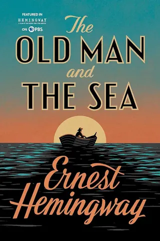
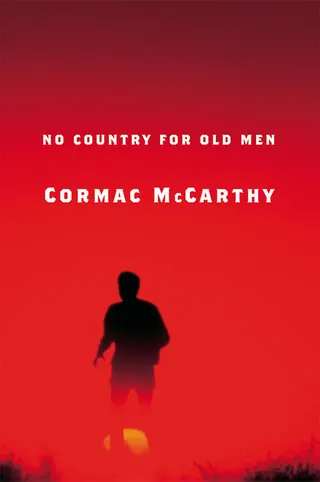
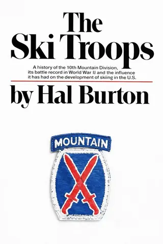
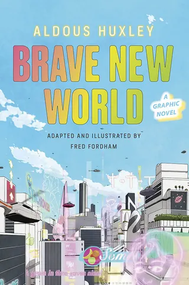
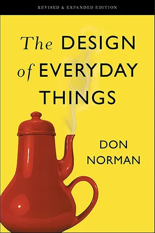

Book Recommendations
Autobiographies, Biographies and Memoirs
Fiction

A Farewell to Arms by Ernest Hemingway
The Old Man and the Sea by Ernest Hemingway
No Country for Old Men by Cormac McCarthyFinance & Economics
History

The Ski Troops by Hal BurtonScience Fiction

Brave New World by Aldous HuxleyScience, Math and Technology
Adventure & Exploration
The Emerald Mile: The Epic Story of the Fastest Ride in History Through the Heart of the Grand Canyon by Kevin Fedarko
Recommended by Eric Larson (Episode 24)
Never Turn Back: The Life of Whitewater Pioneer Walt Blackadar by Ron Watters
Recommended by Eric Larson (Episode 24)
Art & Creativity
The Creative Act: A Way of Being by Rick Rubin
Recommended by Dr. Natália Gauer Pasqualon (Episode 25)
Fiction
Jonathan Livingston Seagull by Richard Bach
Recommended by Dr. Elizabeth Congdon (Episode 23)
Mistborn Series by Brandon Sanderson
Recommended by Srikar Katta (Episode 19)
Project Hail Mary by Andy Weir
Recommended by Dr. Emily Howard (Episode 26)
Inferno by Dante Alighieri
Recommended by Estevan Ortega (Episode 28)
Diablo Archive by Richard A. Knaak
Recommended by Estevan Ortega (Episode 28)
Finance & Economics
Reinventing the Bazaar by John McMillan
Recommended by Dr. Jonathan Koomey (Episode 27)
Religion
King James Bible
Recommended by Estevan Ortega (Episode 28)
Science, Math and Technology
The Challenger Launch Decision by Diane Vaughan
Recommended by Dr. Nancy Currie-Gregg (Episode 29)
Normal Accidents by Charles Perrow
Recommended by Dr. Nancy Currie-Gregg (Episode 29)
Connections by James Burke
Recommended by Dr. Eric Masanet (Episode 21)
The Strangest Man: The Hidden Life of Paul Dirac, Mystic of the Atom by Graham Farmelo
Recommended by Dr. Leigh Cash (Episode 20)
A Cultural History of Mathematics: Volumes 1-6 (The Cultural Histories Series)
Recommended by Dr. Leigh Cash (Episode 20)
Linked: The New Science of Networks by Albert-László Barabási
Recommended by Dr. Jonathan Koomey (Episode 27)

The Design of Everyday Things by Don Norman Recommended by Dr. Jonathan Koomey (Episode 27)